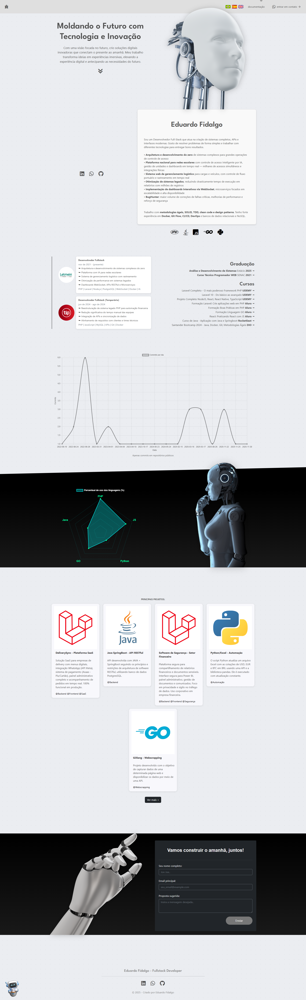

📄 Documentação - Portfólio Futurista
1. Introdução

Este portfólio foi desenvolvido para refletir um design moderno, minimalista e futurista, destacando
minha carreira, projetos e habilidades com suporte completo a múltiplos idiomas.
As principais tecnologias utilizadas foram:
Bootstrap 5.2.3 - Para estilização responsiva e componentes.jQuery 3.6.x - Para manipulação dinâmica do DOM e interações.Chart.js - Para visualização de dados em gráficos interativos.GSAP - Para animações avançadas do cursor customizado.Font Awesome 5.10 - Para ícones e elementos visuais.CSS3 & JavaScript ES6 - Para customizações avançadas e interatividade.Sistema de Tradução Multilíngue - Suporte para Português, Espanhol e Inglês.
2. Instalação
Para rodar o projeto localmente, siga os passos abaixo:
git clone https://github.com/EduardoFidalgo/portifolio.git
cd portifolio
# Abra o index.html no seu navegador preferido
Nota: Não é necessário instalar dependências, pois todas as bibliotecas são carregadas via CDN.
3. Estrutura do Projeto
O projeto segue a seguinte organização:
portifolio/
│── index.html (Página principal do portfólio)
│── documentation.html (Esta documentação)
│── robots.txt (Configuração para crawlers)
│── sitemap.xml (Mapa do site para SEO)
│
│── scripts/
│ └── scripts.js (Lógica do chatbot, traduções e gráficos)
│
│── styles/
│ └── styles.css (Estilos customizados)
│
│── img/
│ ├── robot.svg (Imagem hero)
│ ├── strangeRobot.svg (Imagem radar section)
│ ├── handGod.svg (Imagem formulário)
│ ├── IA.svg (Ícone do chatbot)
│ ├── br-icon.png (Bandeira Brasil)
│ ├── sp-icon.png (Bandeira Espanha)
│ ├── en-icon.png (Bandeira EUA)
│ ├── letmein.png (Logo empresa)
│ ├── tip.png (Logo empresa)
│ ├── LAR.svg (Ícone Laravel)
│ ├── JAVA.svg (Ícone Java)
│ ├── PY.svg (Ícone Python)
│ ├── GO.svg (Ícone Golang)
│ └── favicon.png (Favicon do site)
4. Funcionalidades
Principais recursos do portfólio:
🌍 Sistema Multilíngue - Suporte completo para Português, Espanhol e Inglês com persistência de preferência.
🤖 Chatbot Interativo - Perguntas e respostas predefinidas em 3 idiomas com interface dinâmica.
📊 Gráficos Interativos - Visualização de commits no GitHub e percentual de uso de linguagens com Chart.js.
🎨 Cursor Customizado - Animação fluida com GSAP e efeito de múltiplas bolinhas.
📱 Design Responsivo - Layout adaptável para todos os dispositivos (mobile, tablet, desktop).
⚡ SEO Otimizado - Meta tags completas, Open Graph, Twitter Cards e sitemap.xml.
💾 LocalStorage - Salva preferências do usuário (idioma, mensagens visualizadas).
📝 Formulário de Contato - Integração com Formspree para receber mensagens.
🐛 Sistema de Feedback - Modal para reportar bugs e sugestões.
🎯 Timeline de Experiência - Visualização cronológica da carreira profissional.
🚀 Showcasing de Projetos - Cards interativos com descrição de projetos principais.
5. Sistema de Tradução
O portfólio implementa um sistema completo de internacionalização (i18n) que permite alternar entre 3 idiomas:
5.1. Idiomas Suportados
🇧🇷 Português (PT) - Idioma padrão
🇪🇸 Espanhol (ES)
🇺🇸 Inglês (EN)
5.2. Elementos Traduzidos
Todos os textos principais são traduzidos automaticamente:
✅ Mensagem de loading
✅ Mensagem flutuante de feedback
✅ Menu de navegação (documentação, contato)
✅ Hero section (título e descrição)
✅ Seção "Sobre mim"
✅ Experiências profissionais (LETMEIN e TIP)
✅ Títulos de seções (Graduação, Cursos, Projetos)
✅ Descrições dos 5 projetos principais
✅ Formulário de contato (labels e botões)
✅ Modal de feedback
✅ Chatbot (saudação, perguntas e respostas)
✅ Gráfico radar (label "Percentual de uso das linguagens")
✅ Nota sobre commits públicos
5.3. Como Funciona
O sistema usa atributos HTML customizados e JavaScript:
// HTML
<h1 data-lang="hero-title">Texto em português</h1>
// JavaScript - objeto de traduções
const translations = {
pt: { "hero-title": "Moldando o Futuro..." },
es: { "hero-title": "Moldeando el Futuro..." },
en: { "hero-title": "Shaping the Future..." }
};
// Função que aplica traduções
function changeLanguage(lang) {
document.querySelectorAll('[data-lang]').forEach(el => {
el.innerHTML = translations[lang][el.getAttribute('data-lang')];
});
}
5.4. Persistência
A preferência de idioma é salva no localStorage do navegador e aplicada automaticamente nas próximas visitas.
6. Chatbot Interativo
O chatbot oferece uma experiência interativa para responder perguntas frequentes sobre habilidades, projetos e experiência.
6.1. Características
💬 10 perguntas predefinidas em cada idioma
🔍 Sistema de busca/filtro de perguntas
🎯 Respostas contextualizadas e detalhadas
🌐 Totalmente traduzido para PT, ES e EN
📱 Interface responsiva com botão flutuante
6.2. Perguntas Disponíveis
Principais habilidades como desenvolvedor Full-Stack
Otimização de performance em sistemas de alto tráfego
Metodologias e ferramentas utilizadas
Desenvolvimento e manutenção de APIs
Automação de processos
Tecnologias para Front-End
Últimos projetos desenvolvidos
Experiência com integrações de sistemas
Certificações e formações
Links para mais informações
7. Gráficos e Visualizações
7.1. Gráfico de Commits do GitHub
Exibe um gráfico de linha com a frequência de commits nos últimos dias:
📈 Usa a API do GitHub para buscar commits
📊 Renderizado com Chart.js
⏱️ Atualização em tempo real
📝 Nota: "Apenas commits em repositórios públicos" (traduzida)
7.2. Gráfico Radar de Linguagens
Visualização percentual do uso de linguagens de programação:
🎯 PHP: 100%
🎯 JavaScript: 80%
🎯 GO: 60%
🎯 Java: 40%
🎯 Python: 30%
O label do gráfico é traduzido automaticamente baseado no idioma selecionado.
8. Customização
Ajuste o portfólio ao seu estilo modificando os seguintes arquivos:
8.1. Cores e Estilo Visual
Edite styles/styles.css para personalizar:
Cores principais: #8a2be2 (roxo vibrante), #00d9ff (azul ciano)Gradientes: Backgrounds com efeito linear gradientCursor customizado: Classes .custom-cursor e .cursor-dotAnimações: Transitions e hover effectsCards e botões: Border radius, sombras, glassmorphism
8.2. Conteúdo e Traduções
Edite scripts/scripts.js para modificar:
Objeto translations: Adicione ou altere textos em PT, ES, ENChatbot QA: Modifique perguntas/respostas no objeto chatbotQADados dos gráficos: Percentuais do radar chart, fonte de commitsAdicionar idioma: Crie nova chave no objeto translations (ex: fr: {...})
8.3. Informações Pessoais
Edite index.html para atualizar:
Nome, título profissional e foto de perfil
Timeline de experiências profissionais
Projetos em destaque (título, descrição, links)
Links de redes sociais (LinkedIn, GitHub, etc.)
URL do formulário de contato (Formspree ou alternativa)
8.4. Ícones de Idioma
Substitua os ícones em img/:
br-icon.png - Bandeira do Brasil (Português)sp-icon.png - Bandeira da Espanha (Espanhol)en-icon.png - Bandeira dos EUA/UK (Inglês)
Recomendação: Use imagens PNG transparentes de 32x32px ou 48x48px para melhor qualidade.
9. SEO e Performance
Para garantir um bom desempenho e ranqueamento, foram aplicadas as seguintes práticas:
9.1. Otimizações de SEO
✅ Meta Tags Completas: Description, keywords, author e Open Graph.
✅ Sitemap.xml: Mapeamento completo das páginas do site.
✅ Robots.txt: Configuração para crawlers de busca.
✅ Estrutura Semântica: HTML5 com tags apropriadas (header, nav, section, footer).
✅ Multilíngue: Suporte a 3 idiomas amplia o alcance internacional.
✅ Twitter Cards: Meta tags para compartilhamento otimizado.
9.2. Performance
⚡ CDN para bibliotecas: Bootstrap, jQuery, Chart.js e GSAP via CDN para cache global.
⚡ Minificação: Arquivos CSS e JS podem ser minificados para produção.
⚡ Lazy Loading: Imagens carregadas sob demanda quando possível.
⚡ LocalStorage: Reduz requisições ao salvar preferências localmente.
⚡ Chart.js Otimizado: Gráficos renderizados com canvas para alta performance.
⚡ GSAP Hardware Acceleration: Animações com GPU para suavidade máxima.
9.3. Boas Práticas
📱 Design mobile-first com breakpoints responsivos
♿ Acessibilidade com labels descritivos e contraste adequado
🔒 HTTPS recomendado para produção
🌍 Suporte a múltiplos idiomas melhora UX internacional
© 2025 - Criado por Eduardo Fidalgo